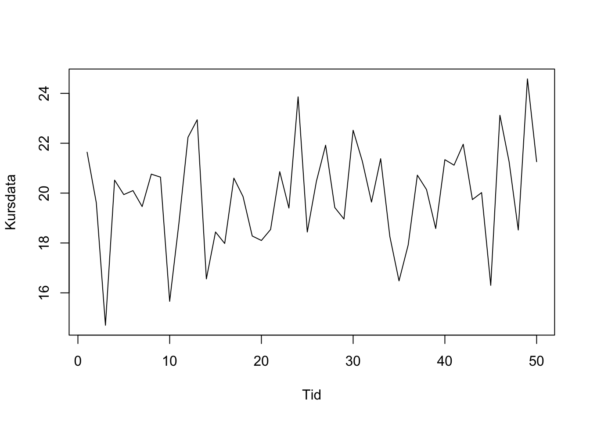

Kapitel 11 Forecast Aktiekurser
Man kan hente online aktiekurser med quantmod pakken installer denne med install.packages og library kommandoerne. Vi henter nedenfor Google lukkekurs til dato.
## [1] "GOOG"
## Series: GOOG[, 6]
## ARIMA(0,1,1) with drift
##
## Coefficients:
## ma1 drift
## 0.0799 1.1423
## s.e. 0.0539 0.7210
##
## sigma^2 estimated as 176.6: log likelihood=-1577.28
## AIC=3160.56 AICc=3160.62 BIC=3172.49## Point Forecast Lo 80 Hi 80 Lo 95 Hi 95
## 396 1237.150 1220.121 1254.179 1211.106 1263.194
## 397 1238.292 1213.228 1263.356 1199.960 1276.624
## 398 1239.434 1208.347 1270.521 1191.891 1286.978
## 399 1240.577 1204.457 1276.696 1185.337 1295.817
## 400 1241.719 1201.187 1282.251 1179.731 1303.707
## 401 1242.861 1198.353 1287.370 1174.791 1310.931
## 402 1244.004 1195.845 1292.162 1170.352 1317.655
## 403 1245.146 1193.595 1296.696 1166.306 1323.985
## 404 1246.288 1191.556 1301.021 1162.582 1329.994
## 405 1247.430 1189.691 1305.170 1159.125 1335.735require("quantmod")
getSymbols("GS",from = "2017-01-01", to = Sys.Date(),getSymbols.warning4.0=FALSE)## [1] "GS"
## Series: GS[, 6]
## ARIMA(0,1,0)
##
## sigma^2 estimated as 10.09: log likelihood=-1014.44
## AIC=2030.88 AICc=2030.89 BIC=2034.86## Point Forecast Lo 80 Hi 80 Lo 95 Hi 95
## 396 237.64 233.5691 241.7109 231.4141 243.8659
## 397 237.64 231.8829 243.3971 228.8352 246.4448
## 398 237.64 230.5890 244.6910 226.8564 248.4236
## 399 237.64 229.4982 245.7818 225.1882 250.0918
## 400 237.64 228.5372 246.7428 223.7184 251.5616
## 401 237.64 227.6683 247.6117 222.3897 252.8903
## 402 237.64 226.8694 248.4106 221.1678 254.1122
## 403 237.64 226.1257 249.1543 220.0304 255.2496
## 404 237.64 225.4273 249.8527 218.9622 256.3178
## 405 237.64 224.7666 250.5134 217.9519 257.3281require("quantmod")
getSymbols("DANSKE.CO",from = "2017-01-01", to = Sys.Date(),getSymbols.warning4.0=FALSE)## [1] "DANSKE.CO"
## Series: DANSKE.CO[, 6]
## ARIMA(0,2,1)
##
## Coefficients:
## ma1
## -0.9899
## s.e. 0.0072
##
## sigma^2 estimated as 6.312: log likelihood=-909.64
## AIC=1823.28 AICc=1823.31 BIC=1831.21## Point Forecast Lo 80 Hi 80 Lo 95 Hi 95
## 393 187.4959 184.2762 190.7156 182.5718 192.4201
## 394 187.1919 182.6155 191.7683 180.1929 194.1908
## 395 186.8878 181.2546 192.5210 178.2726 195.5030
## 396 186.5837 180.0464 193.1210 176.5858 196.5817
## 397 186.2797 178.9341 193.6252 175.0457 197.5136
## 398 185.9756 177.8888 194.0623 173.6080 198.3432
## 399 185.6715 176.8934 194.4496 172.2465 199.0965
## 400 185.3674 175.9367 194.7981 170.9444 199.7905
## 401 185.0634 175.0112 195.1155 169.6899 200.4368
## 402 184.7593 174.1113 195.4073 168.4745 201.0441